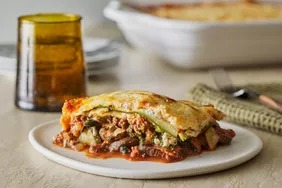

Lasagna

Description
Make this zucchini lasagna recipe for a delicious low-carb dinner that'll satisfy your Italian food craving. It's perfect in the summer with garden-fresh veggies and herbs, or in the winter when you need a comforting meal. You won't even miss the noodles in this one!
Ingredients
- zucchini
- Seasonings
- Beef
- Veggies
- Frozon Spinach
- Tomato
- Wine
- Cheese
- Eggs
Steps
- Slice, salt, and drain the zucchini.
- Make the meat sauce.
- Make the tomato sauce.
- Make the ricotta mixture.
- Assemble the zucchini lasagna according to the detailed instructions in the recipe.
- Bake according to the recipe.